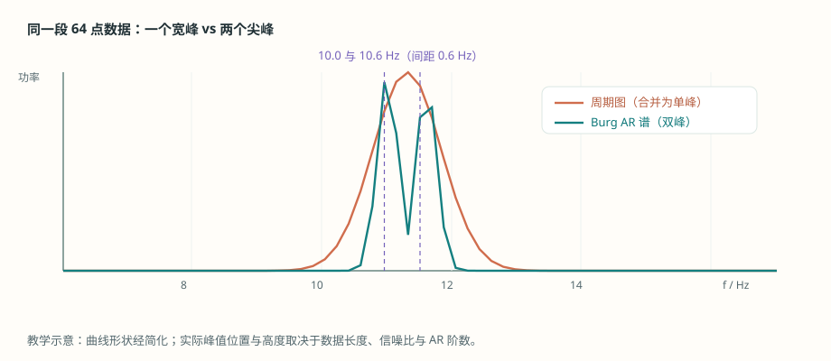
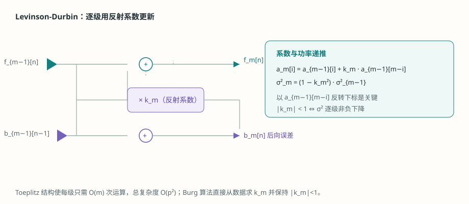
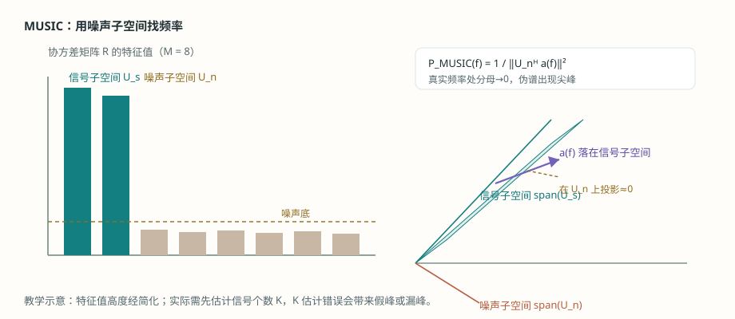

Signal · System · Insight / 17
谱估计进阶：AR 模型与 MUSIC
当两个频率靠近到周期图分不开时，改用参数模型或子空间方法；先看清它们各自依赖的假设。
周期图的分辨极限与补零的误解
给定长度 N 的记录 x[0..N−1]，周期图是最直接的非参数谱估计：它不是对信号做任何模型假设，而是用有限长的傅里叶变换直接给出功率的频域分布。但它有一个可用观测长度决定的分辨极限：当两个频率分量靠得足够近时，周期图会把它们合并成一个宽峰。
式（1）：f 是归一化到采样率的数字频率；这里保留 1/N 归一化，使白噪声的期望谱平坦。
对未加窗的矩形窗而言，单个正弦的主瓣宽度约为 f_s/N，因此间隔小于这个宽度的两个分量难以分开。要小心两种说法：f_s/N 首先是 DFT 在 0～f_s 上划分的观察网格间距，不是任意信号的普适分辨率下界；加长观测、换窗或引入模型都会改变可分辨性。补零只增加频域插值采样密度，它让谱看起来更“平滑”，却不会增加信息、也不会缩小主瓣。

f_s/N = 1 Hz。赭色矩形窗周期图只出现一个宽峰；青色 Burg AR 谱出现两个分开的尖峰。分辨能力的来源不是数据变长了，而是引入了一个参数模型。AR 模型：先建模，再算谱
参数化方法换了一条路：先假设信号服从某个有限参数的模型，估计出参数，再由参数算出谱。最常用的是 p 阶自回归（AR）模型，它把当前样本写成前 p 个样本的线性组合加白噪声激励：
式（2）：u[n] 是均值为零、方差为 σ² 的白噪声；n 为整数。
AR 模型等价于“白噪声经过一个全极点 IIR 滤波器”。因此信号的功率谱就是该滤波器幅频响应的平方乘上激励方差：
式（3）：分母的极点靠近单位圆时会出现尖锐的谱峰，这正是 AR 谱高分辨率的来源。
阶数 p 是核心旋钮。阶数过低会欠拟合、谱峰不够尖锐；阶数过高会在不存在信号分量的频率上产生假峰。AIC、MDL 等判据可作参考，但应结合物理上界，而不是完全交给自动定阶。本页的交互实验可以直接看到这一点。
Yule-Walker 与 Levinson-Durbin
把 AR 模型两边乘以 x*[n−m] 并取期望，利用激励 u[n] 与过去样本不相关，可以得到 Yule-Walker 方程。它把待求的 AR 系数与自相关函数 r[m] = E[x[n]x*[n−m]] 联系起来：
式（4）：写成矩阵后，系数矩阵是 Toeplitz 矩阵（每条对角线元素相等）。
Toeplitz 结构带来两个好处。第一，可直接用 r[0..p] 解出系数；第二，可以用 Levinson-Durbin 递推逐级增加阶数：每级只做 O(m) 次运算，总复杂度 O(p²)，而不是直接解方程组的 O(p³)。递推的副产品是反射系数 k_m，它同时给出稳定性信息：只要所有 |k_m| < 1，预测误差功率便逐级非负下降，AR 模型稳定。

f 与后向误差 b 用同一反射系数 k_m 耦合，并按 a_m[i] = a_{m−1}[i] + k_m·a_{m−1}[m−i] 更新系数。注意下标 m−i 的反转，这是最容易写错的地方。需要注意：用样本自相关代入 Yule-Walker 方程时，估计本身可能有偏、方差较大，而且该方法不自动保证稳定性。下一节的 Burg 算法正是为了解决这两点。
Burg：直接从数据估反射系数
Burg 算法不再先估自相关再解方程，而是直接从前向预测误差与后向预测误差估计反射系数。第 m 级的前向与后向误差分别记作 f_m[n] 与 b_m[n]；Burg 选取 k_m，使前向与后向误差功率之和最小：
式（5）：* 表示复共轭；实数据时可省去共轭，反射系数也是实数。
这个做法的关键好处是：只要数据不是病态的，求出的 |k_m| 必定小于 1，因此 Burg 谱对应的 AR 模型天然稳定。本仓库的 17_spectral.py 在 16 阶 Burg 谱上验证了这一点：最大 |k| 约为 0.993，全部小于 1，同时谱上稳定地出现两个峰。
MUSIC：子空间与超分辨率
子空间方法换了一个观察角度。它不把信号当成单个标量序列，而是把 M 个阵元（或延迟样本）同时看成一个 M 维向量 x(n)，并估计协方差矩阵 R = E[x(n)xᴴ(n)]。若信号由 K 个复正弦加白噪声组成，R 的特征分解自然分成两块：K 个较大特征值张成信号子空间 U_s，其余 M−K 个接近噪声功率，张成噪声子空间 U_n。
关键性质是两子空间相互正交：每个真实频率的导向矢量 a(f) 都落在信号子空间里，因此它在噪声子空间上的投影接近零。MUSIC 就把这件事写成伪谱：
式（6）：a(f) = [1, e^{j2πf}, …, e^{j2π(M−1)f}]ᵀ；H 为共轭转置。

R 的特征值：前 K 个高耸的是信号子空间，其余接近噪声底的是噪声子空间。右图说明真实频率的导向矢量落在信号子空间内，在噪声子空间上投影≈0，于是伪谱分母接近零、出现尖峰。当 f 等于某个真实频率时，式（6）的分母接近零，伪谱出现尖峰。理论上，只要信噪比足够高、信号个数 K 估计正确，这个峰的位置可以分辨出间隔远小于 f_s/N 的两个分量，因此被称为“超分辨率”。但它的前提很硬：需要正确的子空间分解、较准的阵列流形与足够的快拍；K 估计错误会造成假峰或漏峰。注意伪谱纵轴不是真实的功率幅度，只有峰位置可信。
交互：AR 阶数与可分辨性
下面的实验中，输入固定为两个间隔 0.6 Hz 的正弦（采样率 64 Hz、64 点、白噪声）。滑块改变 Burg AR 的阶数 p；赭色柱是矩形窗周期图，青色曲线是 AR 谱。可以看到：阶数太低时 AR 谱仍与周期图一样合并为单峰，阶数合适时分开为双峰，阶数过高时谱线开始起伏。
动手验证：选择 AR 阶数 p
两条曲线各自归一化到自身最大值，因此只比较峰的位置与个数，不比较绝对高度。当 JS 关闭时，FIGURE 01 与式（2）（3）仍可独立理解原理。
# Burg 递推的核心一步（完整可运行版见 examples/17_spectral.py）
num = -2 * sum(f[n] * b[n-1] for n in range(m, N))
den = sum(f[n]**2 + b[n-1]**2 for n in range(m, N))
km = num / den # 反射系数，|km| < 1
for i in range(1, m):
a[m][i] = a[m-1][i] + km * a[m-1][m-i] # 下标反转
err *= 1 - km * km完整可执行例程（17_spectral.py）：断言周期图只给一个峰、Burg AR 谱给出两个峰，并校验全部 |k|<1。
边界与失效模式
- “超分辨率”不是无条件成立：AR/MUSIC 的分辨增益来自模型或子空间假设；模型不成立时，性能可能反而不如简单的周期图。
- 阶数/信号个数必须选对：AR 阶数过低欠拟合、过高出现假峰；MUSIC 的
K估计错误会导致假峰或漏峰。 - 信噪比与快拍数：MUSIC 在低信噪比或快拍数不远远大于阵元数时，样本协方差病态、零陷/峰变浅。
- 伪谱不等于功率：AR 谱的峰高不准，MUSIC 伪谱只有峰位置可信；要估计真实功率需额外的幅度校正。
- 补零不提高分辨率：它只增加频域的插值采样密度，不增加信息。
自检：为什么把 N 点数据补零到 4N 点后，两个靠得很近的峰会变“平滑”却仍然分不开？Burg 算法相比 Yule-Walker，额外保证了什么性质？
参考资料与接口
- MIT OCW · Discrete-Time Signal Processing：周期图、参数化谱估计与 AR/Yule-Walker 的推导。
- R. O. Schmidt (1986) · Multiple Emitter Location and Signal Parameter Estimation：MUSIC 子空间方法的原始文献。
- SciPy · periodogram：非参数谱估计与窗函数接口。
- SciPy · welch：分段平均降低方差，代价是分辨率下降。